التعليقات التوضيحية والتفاصيل ثنائية الأبعاد
يشرح هذا الفصل الأبعاد والقيود، والملاحظات النصية، والبطاقات، والغرف والمساحات مع مخططات ألوانها، وعروض وسائل الإيضاح، وأدوات الرسم ثنائي الأبعاد: خطوط التفاصيل، والمناطق، والمكوّنات التفصيلية، والتفاصيل المتكررة، والعزل، والعروض ثنائية الأبعاد الحرة. تنتمي التعليقات التوضيحية إلى العرض الذي أُنشئت فيه: فالبُعد الموضوع في مسقط أفقي لا يظهر في مسقط آخر.
قبل كل نقرة، تُظهر كل أداة ما ستنشئه في موضع المؤشر: البُعد مع قيمته، وإطار الملاحظة، والوسم على العنصر الواقع تحت المؤشر، والمنطقة التي ستشغلها الغرفة أو المساحة، والخط أو المنطقة أو المكوّن أو العزل الجاري رسمه.
الأبعاد
يضم توثيق ▸ بُعد أدوات الأبعاد: محاذية وخطي وزاوية وشعاعي والقطر وطول القوس، وأبعاد النقاط منسوب نقطة وإحداثيات نقطة وميل نقطة. وهي تعمل في المساقط الأفقية والمقاطع والواجهات والعروض ثنائية الأبعاد الحرة ووسائل الإيضاح. اختر نوع البُعد من محدد الأنواع ما دامت الأداة مفعّلة؛ ويعدّل معلمات النوع النوع، ومعه كل بُعد من هذا النوع.
الأبعاد المحاذية والخطية
مع محاذية يعرض شريط الخيارات أي جزء من الجدار يُلتقط (محاور الجدار أو أوجه الجدار أو محور النواة أو أوجه النواة) وماذا تلتقط النقرة:
- المراجع: انقر المراجع واحداً بعد الآخر (أوجه الجدار أو محاوره، والشبكات، وحواف الأبواب والنوافذ، وخطوط التفاصيل، وحواف رموز وسائل الإيضاح)، ثم انقر موضعاً فارغاً لوضع خط البُعد هناك. أثناء الاختيار تتبع السلسلة المؤشر. اضغط TAB فوق جدار للتنقل بين مراجعه.
- جدران كاملة: نقرة واحدة تُبعِّد جداراً كاملاً. يفتح خيارات خيارات التبعيد التلقائي: الفتحات مع المحاور أو كلتا قيم العرض، والجدران المتقاطعة والشبكات المتقاطعة. الفتحات بقيم العرض والجدران المتقاطعة محددة منذ البداية. عند المرور فوق جدار يُضاء مع كل المراجع التي ستضيفها النقرة. انقر الجدار، وانقر جدراناً أخرى لإضافتها إلى السلسلة، ثم انقر خارجها لوضع الخط. عند كل طرف تصل السلسلة إلى الجدار المتصل هناك (محوره أو وجهه الخارجي حسب تفضيل شريط الخيارات). ويُعدّ الجدار الستاري المضمَّن في الجدار فتحةً. الشبكة التي تقع على طرف جدار أو على مرجع آخر لا تضيف خط امتداد. ويعمل الأمر بالطريقة نفسها في المساقط والمقاطع والواجهات.
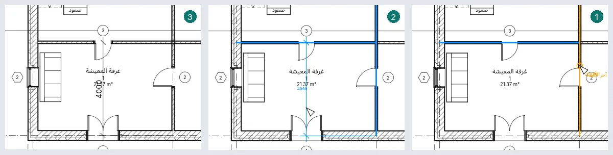
يقيس خطي على الأفقي أو الرأسي من العرض، بين نقاط مثل أطراف الجدران: موضع وضع الخط يحدد أيهما، ويبدّل مفتاح المسافة بين الاثنين.
تقيس زاوية الزاوية بين جدارين أو شبكتين أو خطين يلتقيان؛ وتصنع عدة خطوط تمر بالنقطة نفسها سلسلة من الزوايا، لكل منها قيمتها؛ وتحدد النقرة الأخيرة القطاع.
الأبعاد الشعاعية وأبعاد القطر وطول القوس
يُبعِّد شعاعي والقطر وطول القوس دائرةً أو قوساً: لخط تفاصيل أو لجدار منحنٍ. انقره ثم انقر موضع البُعد. على الجدار المنحني يحدد التفضيل في شريط الخيارات ما يأتي أولاً (محوره، سطوحه، نواته) وينتقل TAB إلى البقية. يمر بُعد القطر بالمركز مع سهم على المنحنى عند كل طرف وØ قبل القيمة؛ وإذا وُضع خارج المنحنى امتد خطه ليحمل القيمة. وعلى قوس أقصر من نصف دائرة يغطي القطر كله مع ذلك. تتبع الأبعاد القوس عندما يتغير نصف قطره وتزول عند حذفه. وفي المقطع أو الواجهة لا تُعرض إلا الأقواس المرسومة فيهما.
للبُعد الشعاعي أو بُعد القطر المحدد مقبض عند طرفه على المنحنى: اسحبه لتدوير الخط حول المركز؛ وإذا أُفلت على قوس أو دائرة أخرى لها المركز نفسه، قاس البُعد ذلك. وتفتح قيمته نص البُعد، ويحرك المقبض الذي تحتها النص، كما في الأبعاد المحاذية. وتفتحه كذلك قيم الأبعاد الزاوية وأبعاد طول القوس، وتتحرك بالطريقة نفسها.
تعديل بُعد
- حدّد بُعداً وانقر قيمته: يفتح نص البُعد. يُبقي استخدام القيمة الفعلية القياس ويضيف نصاً فوقه أو تحته أو قبله أو بعده؛ ويعرض استبدال بنص كلمات بدلاً منه (يُرفض الرقم).
- اسحب المقبض الأزرق تحت النص لإبعاده عن الخط؛ وإذا أعدته قرب الخط استقر في موضعه. النص الذي يُنقل بعيداً يحصل على خط إشارة قوسي إلى مقطعه؛ ويزيله خط الإشارة في شريط الخيارات.
- التحديد: الأبعاد ▸ خطوط الامتداد ▸ تعديل خطوط الامتداد: انقر عناصر لإضافة خطوط امتداد، وانقر خط امتداد قائماً لإزالته، ثم انقر موضعاً فارغاً للإنهاء. لكل خط امتداد في بُعد محدد عنصر تحكم في منتصفه: انقر عليه بزر الفأرة الأيمن ▸ نقل خط الامتداد، ثم انقر المرجع الجديد؛ أو ▸ حذف خطوط الامتداد. وعنصر التحكم عند طرف خط الامتداد من جهة العنصر يسحب فجوته عن العنصر؛ وقرب فجوة خط امتداد آخر يأخذ الفجوة نفسها.
- حدّد عنصراً يقيسه البُعد وانقر قيمة بجواره: اكتب مسافة جديدة واضغط Enter، فينتقل العنصر: جدار أو شبكة أو باب أو نافذة (على طول جداره) أو خط تفصيل.
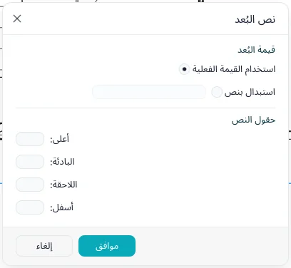
يحدد النوع العلامة (مائلة أو سهماً ممتلئاً أو نقطة)، وامتدادات خط البُعد وخطوط الامتداد (عنصر تحكم خط الامتداد: فجوة عن العنصر، أو مثبت على خط البُعد مع طول خط الامتداد)، ومسافة التقاط خط البُعد (عند الوضع أو السحب يلتقط الخط مضاعفاتها بعيداً عما يقيسه، وخطوة واحدة من سلسلة موازية لتتراص السلاسل بانتظام؛ ويُظهر خط متقطع وتلميح الالتقاط؛ و0 يعطّلها)، وسماكة الخط وسماكة خط العلامة، ورمز خط المحور ونمط خط المحور وعلامة خط المحور (افتراضي هي علامة النوع) لخطوط الامتداد الممتدة إلى خطوط المحاور، واللون، وحجم النص، والإزاحة، والخلفية، والعريض والمائل والتسطير، والوحدات (يفتح تنسيق الوحدات نافذة التنسيق: استخدام إعدادات المشروع، أو وحدة مع تقريبها، ولو مخصصاً مع معامل الزيادة، ورمزها وخياراتها)، وللأبعاد الخطية نوع سلسلة الأبعاد: متصل أو خط الأساس (قيم مكدّسة من المرجع الأول) أو الإحداثيات (قيم من المرجع الأول على خط واحد). يكتب إظهار ارتفاع الفتحة ارتفاع الباب أو النافذة تحت العرض المقيس من حلق إلى حلق. ولأنواع الأبعاد الشعاعية وأبعاد القطر علامة مركزها (علامات المركز، مع حجمها) ورمزها: نص رمز نصف القطر (R) أو نص رمز القطر (Ø)، وموضعه، قبل القيمة أو بعد القيمة أو مخفي (موضع رمز نصف القطر، موضع رمز القطر). ويحدد نوع خط الإشارة خط إشارة النص المنقول: قوس، أو خط مع طول الكتف وموضع النص (فوق: يمر الكتف تحت النص؛ على الخط: ينتهي عند جانب النص)؛ وتعلّم علامة خط الإشارة طرفه على خط البُعد، ويرسمه إظهار خط الإشارة عند تحريك النص ما إن يتحرك النص (بعيدًا عن الأصل) أو بعد خطوط الامتداد فقط (خارج خطوط الامتداد). ومع الأسهم، يوضع الأسهم خارج المقطع القصير جداً عنها، ويستمر الخط بعدها بمقدار امتداد خط البُعد المقلوب. يفتح توثيق ▸ بُعد ▸ أنواع الأبعاد معلمات النوع الحالي لكل عائلة، لضبطه قبل وضع الأبعاد.
تُظهر سلسلة خط الأساس المحددة عند أصلها مقبض قلب: انقره، أو اضغط مفتاح المسافة، للقياس من الطرف الآخر. تحدد إزاحة خط الأساس في خصائصها المسافة بين خطوطها على الورق.
لنوع الأبعاد الإحداثية إعدادات الأبعاد الإحداثية في معلمات النوع: يفتح تحرير… نافذة فيها اتجاه النص (محاذٍ لخطوط الامتداد أو أفقي)، وموضع النص (على امتداد خط الامتداد أو فوق خط الامتداد)، وإظهار نقطة الأصل، وعلامة نقطة الأصل (قيمة الصفر أو دائرة أو علامة النوع)، ونمط خط البُعد (متصل أو بدون، فلا تبقى إلا خطوط الامتداد وعلاماتها).
الأبعاد المؤقتة
حدد عنصرًا فتُظهر الأبعاد المؤقتة مسافاته إلى أقرب المراجع الموازية له: الجدران والشبكات والمناسيب والمستويات المرجعية وحواف الأرضيات وخطوط فصل الغرف وخطوط التفاصيل. وتظهر لكل فئة في كل عرض يُرسم فيه العنصر: المساقط والمقاطع والواجهات والعروض ثلاثية الأبعاد، حيث تقع على منسوب العنصر. ويُظهر المنسوب المحدد، في مقطع أو واجهة، مسافاته إلى المنسوبين الأعلى والأدنى.
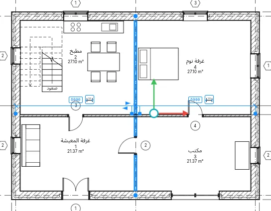
انقر قيمة واكتب قيمة جديدة واضغط Enter لنقل العنصر: يمكن أن يكون للطول وحدته الخاصة (2.5 m)،
وتبدأ الصيغة بـ = (=8000/2). انقر رمز البُعد المجاور لجعله دائمًا.
لكل خط امتداد مقبض أزرق. اسحب المقبض الموجود على المرجع إلى أي مرجع آخر للقياس منه؛ أو انقر بزر الماوس الأيمن ▸ نقل خط الامتداد ثم انقر المرجع الجديد. وتنقل النقرة على المقبض بين مراجع الكائن نفسه: محور الجدار وأوجهه وأوجه النواة ومحور النواة. ويتذكر العنصر المراجع المختارة لكل عرض، وتتبعها عند تحرك المرجع؛ والنقر بزر الماوس الأيمن ▸ إعادة تعيين المراجع يعيدها إلى أقرب المراجع.
عند تحديد عدة عناصر لا يظهر أي منها، ويوفر شريط الخيارات إظهار الأبعاد لإظهارها لكل العناصر المحددة.
أثناء وضع مكوّن أو باب أو نافذة، تُظهر الأبعاد المؤقتة مسافاته إلى أقرب المراجع؛ ويتنقل Tab إلى المراجع التالية. أوقف المؤشر لحظة: ينتظر العنصر بينما يتجه المؤشر إلى إحدى قيمه، وتسمح نقرة على القيمة بكتابة المسافة التي يوضع عليها. أثناء الرسم يظهر الطول والزاوية؛ ويُظهر تدوير الزاوية كبُعد زاوي، والزاوية المكتوبة تدوّر التحديد.
يحدد المشروع ▸ إعدادات إضافية ▸ الأبعاد المؤقتة من أين تُقاس الجدران (المحور، الأوجه، محور النواة، أوجه النواة) والأبواب والنوافذ (المحور أو الفتحات)، للمشروع كله. ويضبط مربع الحوار نفسه نص كل الأبعاد المؤقتة، للتطبيق: من 8 إلى 20 نقطة (8 في البداية)، على خلفية شفافة أو معتمة. وبجانب الإعدادات معاينة تعرض ثلاثة جدران مقيسة كما اختير؛ ويخفيها مفتاح معاينة في رأس مربع الحوار، ويحتفظ مربع الحوار بحجمه، ويبقى الاختيار.
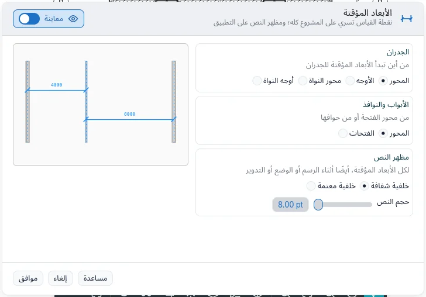
القيود
حدّد بُعداً: يظهر قفل على كل مقطع. انقره لقفل المقطع: تثبت المسافة عندئذ حين ينتقل أي من العنصرين، ويُرفض أي انتقال يكسرها. انقره مرة أخرى، أو انقر عليه بزر الفأرة الأيمن ▸ تبديل القفل، لفك القفل؛ وبزر الفأرة الأيمن ▸ إظهار العناصر المرتبطة يحدد العنصرين اللذين يربطهما القفل. تعرض سلسلة من مقطعين أو أكثر EQ: انقرها فتصير المراجع متساوية التباعد وتبقى كذلك حين ينتقل أحدها. يعرض عرض التساوي في الخصائص القيم بدلاً من EQ.
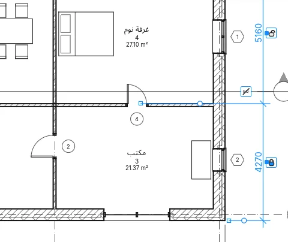
يظهر تحديد عنصر يمسكه قيد على شكل خطوط زرقاء متقطعة، ما لم تكن الفئة القيود مخفية في الرؤية والرسومات. يسأل حذف بُعد يمسك قيداً عما يُفعل: موافق يحذف البُعد ويُبقي القيد؛ وحذف العناصر يحذف الاثنين. وتُعدّ تعديل ▸ محاذاة مع قفلها المغلق قيداً أيضاً.
أبعاد النقاط
- منسوب نقطة: في مسقط أفقي انقر أرضية أو سقفاً أو المنسوب؛ وفي مقطع انقر أي نقطة. القيمة بالمتر مع إشارتها.
- إحداثيات نقطة: الإحداثيان الشمالي والشرقي لنقطة في مسقط أفقي.
- ميل نقطة: ميل جانب سقف في مسقط أفقي، أو خط مائل في مقطع، مع سهم يشير إلى الأسفل.
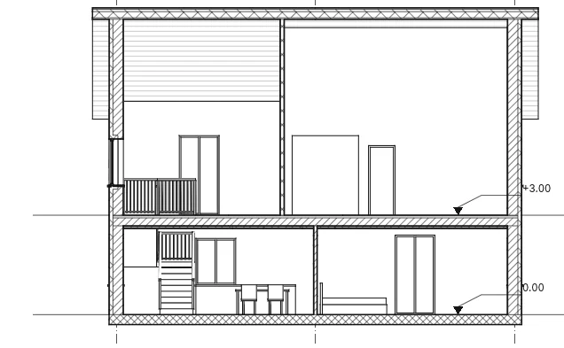
يعرض شريط الخيارات خط الإشارة ومعه، عند وجوده، الكتف: من دون خط إشارة تضع نقرة واحدة النقطة؛ ومع خط إشارة انقر النقطة ثم النص؛ ومع كتف انقر النقطة ثم الانحناءة ثم النص. أثناء التمرير تظهر القيمة عند المؤشر. ولمناسيب النقاط يعرض أيضاً القاعدة النسبية: (لنوع أصل المنسوب فيه نسبي) وعرض المناسيب: في المساقط الأفقية: المنسوب الفعلي أو الأعلى أو الأسفل أو كليهما. ولميول النقاط يرسم تمثيل الميل: سهماً أو، في المقاطع، مثلثاً.
للنقطة المحددة مقابض عند نقطتها وكتفها ونصها: اسحب النقطة فتقيس النقطة ما هو موجود هناك. وتُحذف النقطة الموضوعة على أرضية أو سقف معه. أثناء الوضع يترك Esc النقطة الموضوعة نصفياً؛ ويُنهي Esc ثانٍ الأداة.
يحدد نوع النقطة مؤشر المنسوب ومؤشر الأعلى ومؤشر الأسفل (مؤشر الأعلى أو الأسفل، ثم مؤشر المنسوب، ثم القيمة؛ ويضعه … كبادئة/لاحقة لكل منها بعد القيمة بدلاً من ذلك)، والرمز، وتضمين المنسوب ومؤشر شمال/جنوب ومؤشر شرق/غرب للإحداثيات (مع المؤشر كبادئة/لاحقة)، وطول خط الإشارة واتجاه الميل (لأسفل أو لأعلى) للميول.
تقدّم خصائص منسوب النقطة أيضًا بادئة القيمة المفردة/العليا ولاحقة القيمة المفردة/العليا، وللقيمة السفلى بادئة القيمة السفلى ولاحقة القيمة السفلى: كلمات تُكتب قبل القيمة وبعدها.
الأسهم والخطوط والوحدات البديلة
يفتح المشروع ▸ إعدادات إضافية ▸ الأسهم معلمات النوع لأنواع الأسهم في المشروع. لكل نوع نمط سهم (سهم، قطري، نقطة، علامة مُعزَّزة، رمز المنسوب) ومصمت وزاوية الفتح وحجم العلامة على الورق، وللعلامة المعززة سماكتها الخاصة؛ وما لا يستخدمه النمط يظهر رماديًا. يعمل تكرار… وإعادة تسمية… كما في الأنواع الأخرى، وتعرض المعاينة دليل ملاحظة وبُعدًا مرسومين بالسهم. كل سهم دليل (النصوص والوسوم والرموز وأبعاد النقاط) وكل علامة في أنواع الأبعاد تعرض بدون وهذه الأنواع: تغيير نوع يغيّر كل رسم يستخدمه. ينسخها نسخ الإعدادات من مشروع، ويزيل حذف غير المستخدم ما لا يستخدمه شيء.
في نوع البُعد يشكّل خط النص ومعامل العرض واتجاه القراءة (محاذاة مع الخط، أو أفقي دائمًا حتى في الأبعاد الرأسية) القيمة؛ وتعرض الوحدات البديلة قيمة ثانية إلى اليمين أو أسفل، مع التنسيق… وبادئة ولاحقة خاصة بها. على سطح المكتب يعرض خط النص أيضًا خطوط الحاسوب؛ والمشروع المفتوح على حاسوب لا يملك ذلك الخط يُرسم بخط BIMopen Sans ويُنبَّه إلى ذلك عند الفتح. في نسخة الويب يبقى خطانا فقط. ويختار نوع المنسوب أيضًا الرمز (بلا، مثلث، مثلث مصمت، تقاطع) وسهم خط الإشارة مع سماكتي الدليل والسهم.
النص
توثيق ▸ الالنص ▸ النص (TX): انقر موضع الملاحظة واكتب؛ يبدأ Enter سطراً جديداً.
تعطي النقرة ملاحظة لا تلتف؛ ويعطيها السحب عرضاً فتلتف الكلمات داخله. تنهي النقرة في موضع آخر
الملاحظة، وينهي Esc الأداة. يُزيح Tab أثناء الكتابة الفقرة. حجم النص على الورق: تحتفظ الملاحظة بحجمها المطبوع عند أي مقياس
للعرض.
تضبط مجموعة التنسيق، قبل الوضع أو على ملاحظة محددة:
- خط الإشارة: بلا خط إشارة أو مقطع واحد (انقر الطرف ثم الملاحظة) أو مقطعان (الطرف والمرفق والملاحظة) أو منحنى؛
- المحاذاة يساراً أو وسطاً أو يميناً، وعريض ومائل وتسطير (Ctrl+B وCtrl+I وCtrl+U على الأحرف المحددة أثناء الكتابة، أو على الملاحظة المحددة كلها)؛
- على ملاحظة محددة، إضافة خط إشارة مستقيم إلى اليسار وأزرار خطوط الإشارة الثلاثة الأخرى، وإزالة آخر خط إشارة؛
- الوصل إلى اليسار والوصل إلى اليمين (الأعلى والوسط والأسفل): موضع التقاء خطوط الإشارة بالملاحظة؛ وما يُختار أثناء الوضع يبقى للملاحظات التالية.
- تنسيق الفقرة: الفقرات في قائمة، مع تعداد نقطي أو ترقيم أو أحرف صغيرة أو أحرف كبيرة؛ ويبدأ نص كل بند عند نقطة الجدولة الأولى، وتُزاح الأسطر الملتفة بمقدارها.
قرب خط زاوية ملاحظة أخرى، تلتصق الملاحظة الجديدة به، ويظهرها خط متقطع.
على ملاحظة محددة، اسحب الصليب لنقل الصندوق (تبقى أطراف خطوط الإشارة)، والمقابض الجانبية المستديرة لتغيير عرضه، ومقبض التدوير لإدارته. يصنع مقبض في منتصف كل خط إشارة كوعاً عند سحبه، أو يثني خط الإشارة المنحني. انقر مرتين داخله لتحرير الكلمات. تتضمن خصائصه خطوط إشارة قوسية والوصل إلى اليسار والوصل إلى اليمين، وإبقاء مقروءًا الذي لا يعرضه مقلوباً أبداً. يحدد نوع النص اللون (للنص والإطار وخطوط الإشارة)، والخلفية (معتم يخفي ما خلفه)، وإظهار الإطار مع إزاحته، ورأس سهم خط الإشارة، والحجم، وسماكة الخط للإطار وخطوط الإشارة، والحجم، وحجم الجدولة (12.7 مم)، والعريض والمائل والتسطير. يفتح الزر الصغير أنواع النصوص في مجموعة النص معلمات النوع، حيث ينشئ تكرار… نوع نص جديداً.
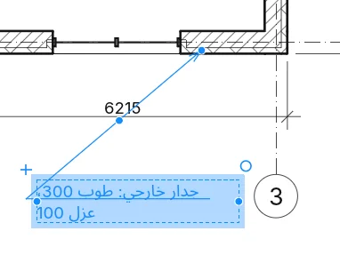
يبحث توثيق ▸ الالنص ▸ بحث/استبدال عن كلمات في ملاحظات التحديد الحالي أو العرض الحالي أو المشروع كله (النطاق:)، مع خيارات لحالة الأحرف والكلمات الكاملة. يسرد بحث عن الكل المطابقات مع العرض الذي توجد فيه؛ ويحدد البحث عن التالي، أو النقر على صف، تلك الملاحظة ويعرض نصها الكامل تحت السياق. ويغيّر استبدال المطابقة المميّزة (الأولى إن لم توجد)، واستبدال الكل كل المطابقات، ويغلق إغلاق الحوار. وهو موجود أيضاً في الأدوات من بطاقة الملاحظات المحددة.
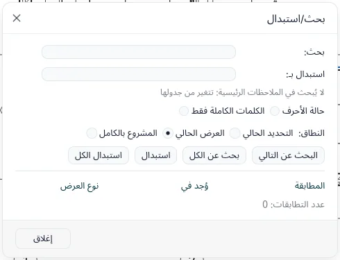
داخل مجموعة، يعرض بحث عن الكل صفًا واحدًا لكل نوع مجموعة، مع قفل وعدد النسخ؛ تُغيَّر تلك الملاحظات من تعديل المجموعة، حيث يصبح النطاق المجموعة قيد التعديل وينقل إنهاء التغيير إلى كل النسخ.
التعليقات التوضيحية ▸ النص ▸ المدقق الإملائي (F7) يدقق الملاحظات النصية المحددة، وإلا ملاحظات
العرض أو اللوحة (مع العروض الموضوعة عليها)؛ تبقى العلامات والأبعاد والمعاملات والجداول خارجه، ويكون
الأمر رماديًا في العرض ثلاثي الأبعاد. لكل كلمة غير موجودة في القاموس تعرض النافذة الملاحظة مع
إبراز الكلمة، وتغيير إلى وحتى ستة اقتراحات: تجاهل، تجاهل الكل (حتى إغلاق المشروع)،
إضافة إلى القاموس (القاموس الشخصي)، تغيير وتغيير الكل (أيضًا في الملاحظات التي لم
تُدقَّق بعد)؛ وتُزال الكلمة المكررة بـحذف. التدقيق كله خطوة تراجع واحدة. تُتخطى الملاحظات داخل
المجموعات وتسرد الرسالة الأخيرة المجموعات؛ وفي تعديل المجموعة تُدقَّق ملاحظات المجموعة فقط.
تجمع الخيارات ▸ الإملاء المربعات الخمسة (الكلمات بالأحرف الكبيرة، وبأرقام، وبأحرف مختلطة،
وعناوين الويب والمسارات، والكلمات المكررة)، واستعادة الافتراضيات، والقاموس الرئيسي (الإيطالية
مضمّنة، وتأتي اللغات الأخرى مع حزم اللغة) والقاموس الشخصي، وهو ملف نصي بكلمة في كل سطر، مع
تحرير….
خط النص في نوع النص هو BIMopen Sans أو BIMopen Mono ذو العرض الثابت؛ ومعامل العرض يرسم الحروف أضيق (أقل من 1) أو أعرض، على الشاشة وفي الطباعة وفي التصدير.
تنسيق النص وخطوط الإشارة
أثناء الكتابة، يُطبَّق عريض ومائل وتسطير (أو Ctrl+B وCtrl+I وCtrl+U) على الأحرف المحددة؛ ومن دون تحديد على ما تكتبه بعد ذلك. وعندما تكون الملاحظة محددة دون كتابة، تُطبَّق على الملاحظة كلها. وإذا كان التحديد منسقًا جزئيًا، يُظهر الزر ذلك بحدّ متقطع.
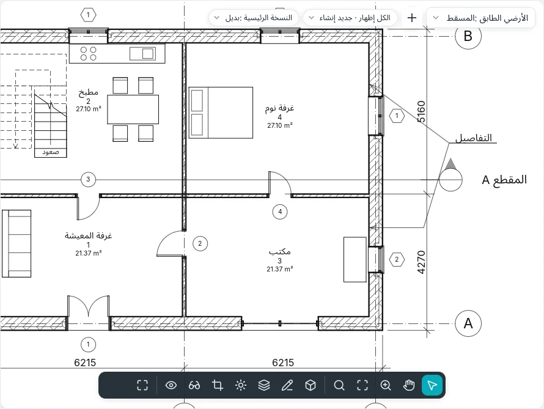
يُطبَّق تنسيق الفقرة على الفقرات التي يلمسها التحديد (أو فقرة المؤشر)، ويبدأ الترقيم من جديد بعد فقرة بلا قائمة. يُزيح Tab نص الفقرة بمقدار علامة جدولة واحدة (تبقى العلامة)، ويُزيل Shift+Tab الإزاحة. يأخذ النص الملصق تنسيق الفقرة. وأثناء الكتابة تعمل لصق وقص ونسخ في مجموعة الحافظة على النص عند المؤشر.
مع خط إشارة، وقرب ملاحظة أخرى، يلتقط طرف الخط نقاط الربط الست لتلك الملاحظة (يسارًا ويمينًا، في الأعلى والوسط والأسفل)، مع العلامة والتلميح نقطة ربط الملاحظة؛ وينتقل Tab إلى النقطة التالية. ومن دون خط إشارة تصطف الملاحظة مع أصول الملاحظات الأخرى (يسارًا أو وسطًا أو يمينًا حسب المحاذاة) ومع نصوص البطاقات. ومع الربط في الأعلى أو في الأسفل يمتد الخط تحت السطر الأول أو الأخير؛ أما في الوسط أو مع إظهار الحد فيتوقف عند الحد.
عند النقر خارجها تبقى الملاحظة المكتوبة للتو محددة مع عناصر التحكم ويبقى الأداة نشطة: أول Esc يلغي التحديد، والثاني ينهي الأداة. نص مرتفع ونص منخفض يصغّران الأحرف المختارة ويرفعانها أو يخفضانها؛ وأحرف كبيرة يعرضها بأحرف كبيرة دون تغيير النص المكتوب.
الرموز
يضع توثيق ▸ الرمز ▸ الرمز (SY) رمزاً توضيحياً ثنائي الأبعاد في مسقط أفقي أو مقطع
أو عرض ثنائي الأبعاد حر أو وسيلة إيضاح: سهم الشمال أو رمز خط المحور أو سهم التدفق أو هدف أو
دلتا المراجعة، وللأخيرين نص خاص بهما. يتبع الرمز المؤشر قبل النقر؛ ويديره مفتاح المسافة ربعاً،
أو تضبط الدوران في شريط الخيارات زاويته. مع عدد خطوط الإشارة: أكبر من صفر، تضع النقرة الرمز
وتضع النقرات التالية أطراف خطوط إشارته. يحدد النوع حجم الرمز على الورق ورأس سهم خطوط إشارته؛ وينشئ
تكرار… في معلمات النوع نوعاً جديداً.
البطاقات
توثيق ▸ بطاقة ▸ بطاقة حسب الفئة (TG): مرّر المؤشر فوق عنصر (باب أو نافذة أو
جدار أو غرفة أو مساحة) وانقر لوسمه. يحدد شريط الخيارات أفقي أو رأسي، وخط الإشارة
وطوله؛ ويبدّل مفتاح المسافة الاتجاه، أثناء الوضع أو على بطاقة محددة. لأداتي الباب والنافذة
وسم عند الوضع، فيأتي كل باب أو نافذة جديدة ببطاقتها.
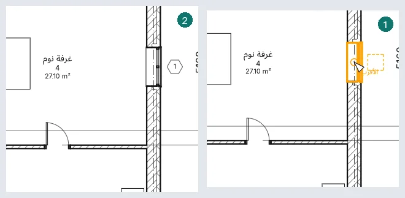
يفتح وسم الكل الحوار وسم العناصر غير الموسومة: ضع علامة على الفئات، ونوع البطاقة لكل منها، وخط الإشارة والاتجاه، لكل عناصر العرض أو للمحددة فقط؛ ولا تحصل على بطاقة إلا العناصر التي لا بطاقة لها.
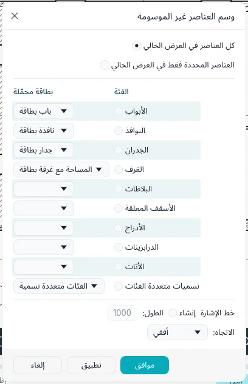
مع خط إشارة، يُنهيه طرف مرتبط على العنصر؛ ويُنهيه طرف حر حيث نقرت، وتُظهر البطاقة المحددة مقبضاً لسحب ذلك الطرف إلى أي مكان (يبدّل طرف خط الإشارة في الخصائص بين الاثنين). وتصطف بطاقة مع بطاقات نوعها الأخرى أثناء وضعها أو سحبها: قرب خط مركز بطاقة أخرى تلتصق به، ويظهره خط متقطع. وتُفعَّل البطاقات المخفية في العرض (الرؤية والرسومات) عند الوسم، وتذكر الرسالة ذلك.
انقر بطاقة مرتين لتحرير ما تعرضه: علامة باب أو علامة نوع جدار في مكانها؛ ورقم غرفة أو مساحة واسمها معاً في تحرير قيم التسمية. تأخذ البطاقة نوعاً آخر من فئتها نفسها من محدد الأنواع، وينقلها اختيار مضيف جديد (مجموعة المضيف) إلى عنصر آخر من الفئة نفسها. تختار أنواع تسميات الغرف هل تعرض الرقم والمساحة والحجم. وتحتفظ تسمية غرفة أو مساحة مضبوطة على النمط بزاوية: فتدور مع تدوير، ويصطف بها مفتاح المسافة مع كل جدار قريب منها بالتتابع (الدوران في خصائصها). وحذف تسمية غرفة يُبقي الغرفة، وتذكر الرسالة ذلك.
الوسوم المحمّلة والترقيم
تعليق ▸ وسم ▸ الوسوم المحمّلة (في نمط BIMopen الأمر بالاسم نفسه؛ وفي شريط خيارات باب ونافذة الزر الوسوم المحمّلة…) يسرد كل فئة قابلة للوسم مع وسمها الافتراضي. يختصر مرشّح القائمة؛ وفي عمود الوسم يُختار نوع من الفئة أو، لفئات النموذج، وسم متعدد الفئات؛ وتحرير النوع… يفتح نوع الصف المختار. يبقى تحميل… رمادياً حالياً. يُحفظ الاختيار في المشروع ويسري على وسم ووسم الكل والوسم عند الوضع، المفعّل منذ البداية للأبواب والنوافذ.
لكل فئة نموذج وسمها الخاص (الأرضيات، الأسقف المعلقة، الأسطح، الأعمدة، السلالم، المنحدرات، الدرابزين، الألواح والقوائم، الأثاث، الأدوات الصحية، النماذج العامة)، ويُظهر علامة النوع. يبقى الوسم الموضوع للتو محدداً حتى وضع التالي أو الضغط على ESC، وتبقى الأداة نشطة.
تُرقَّم الأبواب والنوافذ والغرف وسائر العناصر انطلاقاً من آخر علامة مكتوبة: يزداد آخر رقم فيها مع الحفاظ على الأصفار (P-09 → P-10)، أو آخر حرف (1A → 1B، Z → AA)؛ وتُتخطّى القيمة المستعملة.
يُظهر الوسم المحدد أدوات التحكم الخاصة به: الصليب فوق النص، عند سحبه، ينقل النص ويتبعه خط الإشارة؛ والكوع في منتصف خط الإشارة يثنيه (نقر مزدوج: يعود مستقيماً)؛ والطرف المرتبط ينزلق على طول العنصر. يحتوي شريط خيارات الوسم المحدد على الاتجاه وخط الإشارة والطرف المرتبط/الحر؛ والنقر على نص الوسم المحدد مسبقاً يكتب قيمته. ولمكونات التفاصيل وسحب المراجعة وسومها أيضاً (تُظهر السحابة رقم المراجعة).
وسم الكل يسم فقط ما يُظهره العرض (يتخطى العناصر المخفية والفئات المطفأة وما يخفيه مرشح أو ما هو خارج الاقتصاص، ويذكر عددها)؛ ومع تحديد يبدأ من العناصر المحددة فقط ويذكر كل صف عدد عناصره؛ وإذا كانت الوسوم مخفية في العرض يسأل أولاً. وفي أنماط الكائنات والرؤية/الرسومات، تحت الوسوم، لكل نوع وسم (الأبواب، النوافذ، الجدران، الغرف، الأثاث، متعدد الفئات، المواد…) صفه بسماكته ولونه ونمطه.
تسميات متعددة الفئات
التعليقات التوضيحية ▸ بطاقة ▸ تسمية متعددة الفئات تسمّي أي عنصر من النموذج: الجدران والأبواب والنوافذ والأرضيات والأسقف المستعارة والأسطح والأعمدة والسلالم والدرابزين والأثاث والأدوات الصحية وألواح الواجهات والنماذج العامة (للغرف والمساحات تسمياتها الخاصة). لها خيارات بطاقة نفسها، وبعد وضعها الخصائص نفسها؛ ومفتاح المسافة يديرها. ما تعرضه يُختار في النوع (معلمات النوع): التسمية، وتحرير… يفتح تحرير التسمية، الحقول حقل في كل سطر، لكل منها بادئة ولاحقة، تُختار من الفئة واسم النوع والعلامة وعلامة النوع والتعليقات والوصف وعدد المضيفات ومعاملات المشروع والمعاملات المشتركة. القيمة الفارغة، أو المعامل الذي لا يملكه العنصر، تُقرأ ?.
مع معامل التصفية (معامل مشترك) في النوع، لا يُبرز ولا يُسمّى إلا العناصر التي تملك ذلك المعامل. النقر المزدوج على سطر من التسمية المحددة يكتب قيمته: معامل العنصر يتغير فورًا؛ ومعامل نوعه يسأل أولًا، لأن جميع عناصر النوع تتغير. توسيم الكل يسرد التسميات متعددة الفئات أيضًا: إذا حُددت، ينال كل عنصر في العرض يملك معامل التصفية ولا يحمل تسمية من ذلك النوع تسميةً. في المقطع أو الواجهة توضع التسمية حيث تنقر، وخط إشارتها إلى نقطة العنصر. وهي تتبع العنصر: عندما يتحرك العنصر أو يتغير، تتحرك التسمية ونهاية خط إشارتها معه، كما في المسقط؛ وهناك أيضًا يديرها مفتاح المسافة ويكتب النقر المزدوج قيمتها. وتتبع تسميات المواد عنصرها بالطريقة نفسها، في المساقط والمقاطع.
تسميات المواد
التعليقات التوضيحية ▸ بطاقة ▸ المادة تسمّي المادة تحت المؤشر، في مسقط أو مقطع أو واجهة بمستوى تفصيل متوسط أو عالٍ: طبقة من جدار أو أرضية أو سطح أو سقف مستعار، مقطوعة أو مرئية، أو مادة باب أو نافذة أو مكوّن أو عمود. في مستوى التفصيل المنخفض لا تُرسم الطبقات: فلا تُبرز، وشريط الحالة يقول ذلك. تعرض التسمية وصف المادة؛ وإن كان فارغًا تُقرأ ?: انقر نقرًا مزدوجًا واكتب، فيُملأ وصف المادة (وتعرضه كل تسمياتها). اسحب المقبض في نهاية خط الإشارة إلى طبقة أخرى فتقرأ التسمية تلك المادة؛ ومفتاح المسافة يديرها. إن فقد العنصر تلك المادة لاحقًا (تغيّر نوعه)، تُقرأ التسمية ? ويحذّر التغيير. التسمية في النوع تختار ما تعرضه: الوصف، الاسم، التعليقات، العلامة، فئة المادة، الكلمات المفتاحية، الشركة المصنعة، الطراز، التكلفة، URL، الملاحظة الرئيسية أو عدد المضيفات.
تسميات بعدة خطوط إشارة
فعّل إضافة/إزالة مضيف في شريط خيارات بطاقة أو تسمية متعددة الفئات أو المادة، وانقر العناصر واحدًا بعد الآخر (النقرة الثانية تزيل أحدها)، ثم مكانًا فارغًا: هناك توضع تسمية واحدة بخط إشارة إلى كل عنصر (Enter يضعها بجانب الأول). تأخذ البطاقة حسب الفئة عناصر من فئتها، وتأخذ تسمية المادة مواضع من المادة نفسها. على تسمية محددة، المضيف ▸ إضافة/إزالة مضيف يضيف خطوط الإشارة أو يزيلها حتى النهاية؛ وخطوط الإشارة ▸ دمج خطوط الإشارة يجمعها في مرفق واحد قبل التسمية، واختيار خطوط الإشارة المعروضة يخفي خط إشارة كل مضيف تنقره أو يظهره. عدد المضيفات في الخصائص يقول كم عنصرًا تشير إليه التسمية. حذف عنصر يزيل خط إشارته؛ وتبقى التسمية ما دامت تشير إلى شيء.
قيم متعددة
عندما تختلف مضيفات التسمية (بابان بعلامتين مختلفتين، أو حقل من تسمية متعددة الفئات) يُقرأ ذلك السطر ‹قيم مختلفة›؛ والسطر المشترك يُقرأ بقيمته، وعدد المضيفات لا يختلف أبدًا. انقر نقرًا مزدوجًا: يُفتح الحقل فارغًا، أو بالقيمة المشتركة، وما تكتبه يذهب إلى جميع المضيفات في خطوة واحدة (معامل أنواعها يسأل أولًا). تسمية الغرفة أو المساحة ذات الغرف المتعددة تفتح تحرير قيم التسمية بما تشترك فيه؛ ولا يُكتب إلا ما تكتبه. المشروع ▸ إعدادات إضافية ▸ إشارة القيم المتعددة تختار ما تعرضه هذه الأسطر: ‹قيم مختلفة›، أو عرض نص مخصص بنص خاص بك. وتعرض لوحة الخصائص لعدة عناصر محددة النص نفسه حيث تختلف قيمها.
الملاحظات الرئيسية
لـالتعليقات التوضيحية ▸ بطاقة ▸ ملاحظة مرمزة أربعة بنود (يعرضها نمط BIMopen كبلاطات):
- ملاحظة العنصر: انقر العنصر (جدارًا أو بابًا أو مكوّنًا أو مكوّن تفاصيل… لنوعه ملاحظة رئيسية)، ثم انحناء خط الإشارة، ثم موضع الملاحظة. تقرأ الملاحظة الرئيسية للنوع؛ والنوع الذي لا ملاحظة له يفتح الملاحظات الرئيسية.
- ملاحظة المادة تعمل مثل المادة: انقر مادة (طبقة بمستوى تفصيل متوسط أو عالٍ) فتقرأ الملاحظة الملاحظة الرئيسية لها؛ وينتهي خط إشارتها دائمًا على المادة.
- ملاحظة حرة: النقرات الثلاث نفسها؛ تُفتح الملاحظات الرئيسية دائمًا وتبقى القيمة في الملاحظة، ولا يتغير العنصر.
- خيارات الملاحظات المرمّزة: انظر أدناه.
لكل ملاحظة أربعة أنواع: رقم، ورقم في إطار كبير، ورقم في إطار صغير، ونص (نص الملاحظة من الجدول). في شريط الخيارات الاتجاه وخط الإشارة والطرف المرتبط أو الحر (طرف ملاحظة المادة حر دائمًا).
تعرض الملاحظات الرئيسية الجدول كشجرة: قيمة المفتاح ونص الملاحظة الرئيسية، وكل صف تحت قيمته الأم؛ + و− تفتحان الفروع وتغلقانها، وبحث يجد الكلمات في القيم والنصوص. موافق يعطي الصف المختار، وإلغاء يترك الإطار فارغًا. تحرير الجدول… يحرر جدول المشروع (القيمة والنص والقيمة الأم). عند تحديد ملاحظة، تختار نقرة على قيمتها، أو على إطارها الفارغ، قيمة أخرى: ملاحظة العنصر تكتب الملاحظة الرئيسية للنوع بعد السؤال (تتغير جميع عناصر النوع)، والحرة نفسها فقط، وملاحظة المادة المادة. … بجانب الملاحظة الرئيسية في معلمات النوع وفي هوية المادة يفتح الشجرة نفسها.
تختار خيارات الملاحظات المرمّزة مصدر الجدول: جدول في المشروع (يُحرَّر هنا) أو ملف مرتبط، وهو ملف نصي بصف لكل ملاحظة — القيمة، TAB، النص، TAB، القيمة الأم (يصلح جدول بيانات محفوظ كنص بعلامات جدولة). المسار الكامل يبيّن مكان الملف، والمسار المحفوظ كيف كُتب، مع استعراض…؛ ونوع المسار مطلق أو نسبي (إلى مجلد المشروع) أو في المكتبة. عرض… يعرض الجدول للقراءة فقط. جدول نموذجي يربط الجدول المرفق: قصير، بالإيطالية، فيه أعمال البناء والعزل والنوافذ والأبواب وقسم لملاحظات المستخدم. إعادة التحميل تقرؤه فورًا، وينبّه الحوار حين يتغير الملف منذ قراءته. يُعاد قراءة الملف في كل مرة يُفتح فيها المشروع؛ ويحتفظ المشروع بنسخة تُستخدم إن غاب الملف (ويقول ذلك)، وتُسرد القيم التي لم تعد في الملف. طريقة الترقيم: حسب الملاحظة الرئيسية تعرض القيمة؛ وحسب اللوحة ترقّم الملاحظات 1، 2، 3… في كل لوحة بترتيب إنشائها، والمسقط الذي ليس على لوحة يعرض إطارًا فارغًا.
عرض ▸ وسائل الإيضاح ▸ مفتاح الملاحظات المرمّزة ينشئ جدولًا، مفتاح الملاحظات الرئيسية، فيه قيمة الملاحظة الرئيسية ونص الملاحظة الرئيسية، صف لكل قيمة، مع علامات تبويب الجداول المعتادة (مرشح مثل «يبدأ بـ» على القيمة، والفرز، والتنسيق، والمظهر). تصفية حسب اللوحة (في المرشح) يسرد في كل لوحة ملاحظات مساقطها فقط؛ ومع الترقيم حسب اللوحة يعرض الأرقام نفسها. بحث/استبدال لا يغيّر الملاحظات الرئيسية أبدًا: تتغير من الجدول.
الغرف
إنشاء ▸ الغرف والمساحات ▸ غرفة (RM)، ثم انقر داخل منطقة تحيط بها جدران أو فواصل
الغرف: تملؤها الغرفة، وحول الجدران القائمة بذاتها أيضاً. في شريط الخيارات:
- الحد العلوي وإزاحة: تصل الغرفة إلى ذلك المنسوب زائد الإزاحة (4000 مم افتراضياً)؛ ومنسوب أعلى يعطي غرفة تمتد عبر عدة طوابق، مثل الفناء الداخلي؛
- وسم عند الوضع، مفعّل افتراضياً، مع اتجاه البطاقة وخط إشارتها؛
- غرفة: جديد، أو غرفة غير موضوعة، لإعادتها إلى مكانها؛
- تمييز الحدود: تتحول الجدران والفواصل التي تحدّ الغرف إلى البرتقالي، ويسردها التحذير.
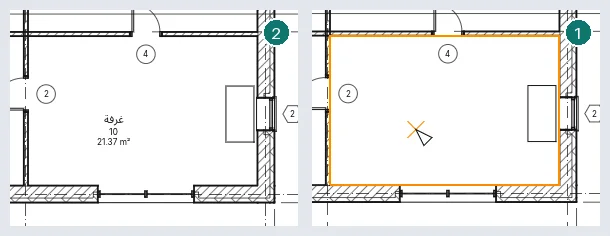
تُحفظ الغرفة الموضوعة في فراغ مفتوح مع تحذير، وتتخذ شكلها حين يُغلق الفراغ؛ وتُعلَّم الغرفة الثانية في منطقة مشغولة بالفعل غرفة زائدة ولا تُحسب مرتين. ويُحذَّر أيضاً من رقم تحمله غرفة أخرى، ومن غرفة أقل من ارتفاع الحساب (1200 مم)، ومن قاعدة تعلوه، ومن فاصل غرف مرسوم فوق آخر.
تحدّ الجدران غرف طابق ما حين تقف عند ارتفاع الحساب فيه: 1200 مم ما دام ارتفاع الحساب التلقائي للغرف مفعّلاً في خصائص المنسوب، وإلا فعند ارتفاع الحساب الخاص به.
يُظهر المقطع الغرف التي يقطعها حين تكون محددة أو تحت المؤشر (يبلغ TAB غرفة خلف عناصر أخرى). وللغرفة المحددة هناك سهم عند أعلاها وسهم عند قاعدتها: اسحبهما لتغيير إزاحة الحد والإزاحة عند القاعدة.
يرسم فاصل الغرف خطوطاً تقسم فراغاً إلى غرف من دون جدران. يحدّ الجدار الغرف ما دامت خاصيته حدود الغرفة مفعّلة. وتحدّ الأرضيات والأسقف الواقعة فوقها حجم الغرفة.
يزيل حذف غرفة من المسقط الأفقي لكنه يُبقيها في المشروع غير موضوعة مع بياناتها؛ وتذهب تسمياتها معها. وحذف تسمية غرفة يُبقي الغرفة. وتسمية غرفة تُسحب خارج غرفتها تسأل هل نقل إلى الغرفة.
تظهر الغرف عبر تسمياتها. في الرؤية والرسومات تتضمن الغرف التعبئة الداخلية والمرجع (خطا التقاطع). يفتح حسابات المساحة والحجم على الحساب: حد الغرفة عند تشطيب الجدار أو محوره أو طبقة النواة أو محور النواة، والمساحات والأحجام لحساب الأحجام أيضاً (افتراضياً المساحات فقط؛ ويقاس الحجم دائماً إلى تشطيب الجدار). تبويبه الثاني هو مخططات المساحات.
المساحات
تنتمي المساحات إلى مخطط مساحات: المساحة الإجمالية (الذي لا يمكن حذفه) وقابلة للتأجير يأتيان مع كل مشروع، وتضيف مخططات المساحات ▸ جديد مخططات أخرى.
- الغرف والمساحات ▸ مساحة ▸ مخطط المساحات: اختر المخطط والمناسيب. أجب نعم لرسم حدود المساحة على الجدران الخارجية، ولا لترسمها بنفسك.
- مساحة ▸ حدود المساحة: ارسم الحدود، أو التقط جدراناً؛ ومع تفعيل قواعد المساحة، يعطي الجدار الخارجي في مسقط إجمالي وجهه الخارجي.
- مساحة ▸ مساحة: انقر داخل الحدود. تُوسم المساحة عند وضعها؛ ويوسمها بطاقة ▸ تسمية المساحة لاحقاً. وإذا وُضعت حيث لا تغلق الحدود منطقة، تُحفظ المساحة مع تحذير وتتخذ شكلها حين تُغلق؛ وتُعلَّم المساحة الثانية في منطقة مساحة مكررة.
يُبقي حذف مساحة إياها في المشروع غير موضوعة، من دون تسمياتها؛ وتسرد المساحة: في شريط خيارات أداة مساحة المساحات غير الموضوعة، لإعادة إحداها بنقرة.
مخططات الألوان
يملأ مخطط الألوان غرف أو مساحات مسقط أفقي (والغرف التي يقطعها مقطع) حسب قيمة (الاسم أو الرقم أو القسم أو نوع المساحة) أو حسب نطاقات مساحة. اضبطه في خاصية مخطط الألوان للمسقط؛ و(لا شيء) يعطّله. ينشئ مخططات الألوان (تعديل مخطط الألوان) المخططات ويكرّرها ويعدّل العنوان والمعامل والقيم مع لونها ورؤيتها وترتيبها والنطاقات. يحتفظ تطبيق بالتغييرات ويضبط مخطط العرض والحوار مفتوح. يرسم موضع مخطط الألوان، وهو خاصية عرض، التعبئات في الخلفية (تحت النموذج) أو في المقدمة (فوق النموذج وتحت التعليقات التوضيحية).
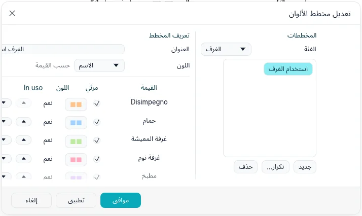
يضع الغرف والمساحات ▸ وسيلة الإيضاح وسيلة إيضاح مخطط المسقط: عينة لون وتسمية لكل قيمة. القيم المعروضة فيها هي حسب العرض (الموجودة في المسقط) أو الكل، ويوزّع الأعمدة العينات على عدة أعمدة. يمكن أن يضم المسقط عدة وسائل إيضاح؛ وحذف إحداها يُبقي المخطط.
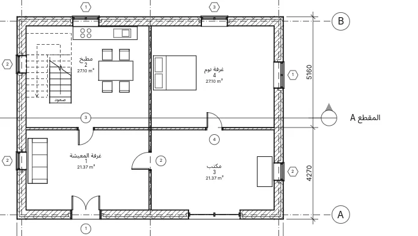
عروض وسائل الإيضاح
يفتح العروض ▸ إنشاء ▸ وسائل الإيضاح ▸ وسيلة إيضاح الحوار عرض وسيلة إيضاح جديد: اسم ومقياس. تُفتح وسيلة الإيضاح وتُسرد تحت وسائل الإيضاح في فهرس المشروع. يضع توثيق ▸ مكوّن ▸ مكوّن وسيلة الإيضاح رمز نوع: في شريط الخيارات النوع، والعرض الذي يُرى منه (جدار في مسقط أو مقطع؛ أرضية أو سقف في مقطع أو مسقط؛ باب أو نافذة أو مكوّن في مسقط أو من الأمام أو من الخلف) وطول المضيف، أي قطعة الجدار التي يجلس فيها الباب أو النافذة. ترسم مكوّنات وسيلة الإيضاح بقيمة التفاصيل لوسيلة الإيضاح، ويمكن نقلها وتبعيدها (حواف الأبواب والنوافذ والمكوّنات؛ لا الجدران والأرضيات والأسقف)، ولا تحسبها الجداول. تعمل النصوص وخطوط التفاصيل والمناطق كما في العرض ثنائي الأبعاد الحر. ويمكن وضع وسيلة إيضاح على عدة لوحات.
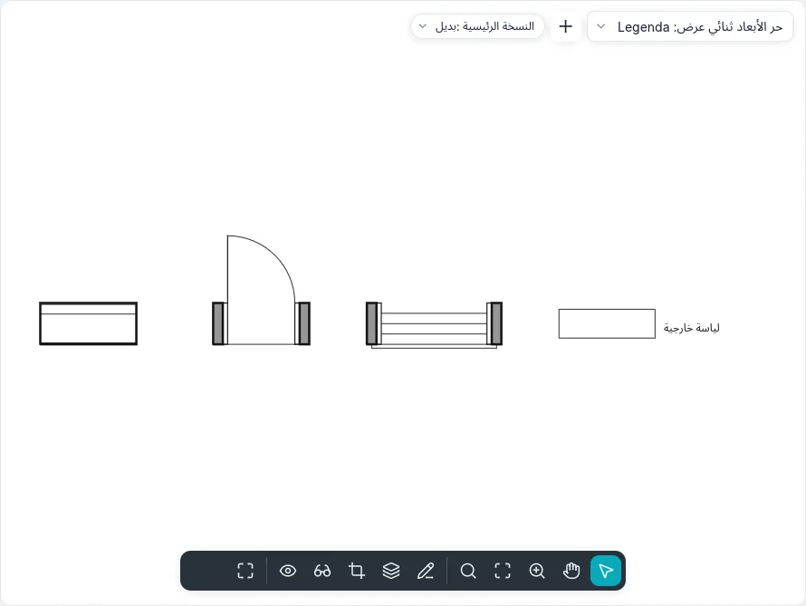
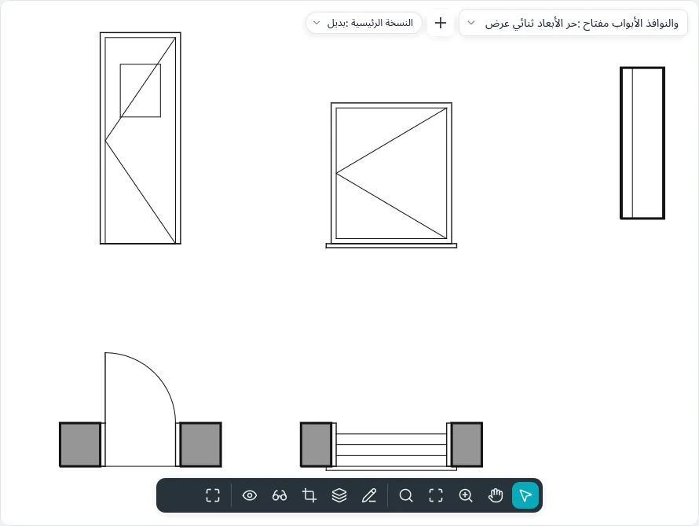
تعرض قائمة المكوّن أيضًا الأسقف المعلقة والأدراج والدرابزينات والأعمدة، ونوعين من العيّنات المرتبطة: المواد: … ترسم عيّنة من نمط القطع أو السطح للمادة، عيّنة بعرض × ارتفاع، وأنماط الخطوط: … ترسم خطًا بطول الطول؛ ويكتب خيار مع الاسم الاسم بجانبها. تتبع العيّنة ما تمثّله: إذا تغيّر نمط المادة أو اسمها، أو سماكة نمط الخط أو لونه أو نمطه، تتبعه وسيلة الإيضاح. في الرؤية/الرسومات لوسيلة الإيضاح، تظهر تحت الأبواب (الإطار، اللوح، خطوط الفتح، الزجاج، العتبة) والنوافذ (الإطار، الزجاج، حافة النافذة، خطوط الفتح) والأدراج (النوائم، القوائم، خط المسار) والدرابزينات (الدرابزين اليدوي، القوائم) فئاتها الفرعية، تُشغَّل واحدة واحدة. وتوضع وسيلة إيضاح التعبئة اللونية أيضًا في مقطع أو واجهة لها مخطط ألوان.
النوع المسحوب من المكوّنات في فهرس المشروع إلى وسيلة إيضاح يصير مكوّن وسيلة إيضاح حيث يُسقَط؛ ونوع من المكوّنات ▸ الرموز يضع ذلك الرمز التوضيحي. يبدأ إنشاء مماثل، في القائمة السياقية لعنصر محدد، الأداة التي تضعه بنوعه: ولمكوّن وسيلة الإيضاح، بعرضه وطول مضيفه أيضاً.
خطوط التفاصيل والمناطق
يرسم توثيق ▸ التفاصيل ▸ خط تفاصيل (DL) خطوطاً في العرض المفتوح فقط، بنمط الخط
المختار في مجموعة نمط الخط. تقدم مجموعة رسم: خط ومستطيل ومضلع محاط ومضلع محيط
ودائرة وقوس بداية-نهاية-نصف قطر وقوس بالمركز والطرفين وقوس مماس ومنحنى وقطع ناقص
وقطع ناقص جزئي وقوس تدوير. ويعرض شريط الخيارات ما يحتاجه الشكل:
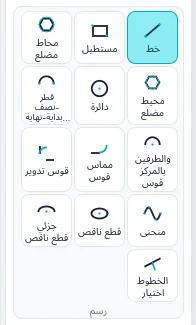
| الخيار | وظيفته |
|---|---|
| متابعة | يبدأ كل خط (أو قوس أو منحنى) من حيث انتهى السابق؛ وبدونه يقف كل منها وحده |
| الإزاحة | ما يُرسم ينتقل جانبياً بذلك المقدار؛ وتلتقي الخطوط المتتابعة عند زواياها |
| نصف القطر | دائرة أو مضلع أو قوس بالمركز والطرفين بذلك نصف القطر (تكفي للدائرة نقرة واحدة)؛ وتأخذ الخطوط المتتابعة والمستطيلات زوايا مستديرة. وتُهمل الإزاحة عندئذ |
| الأضلاع | عدد أضلاع المضلع |
بعد النقرة الأولى، اكتب طولاً (لخط أو وتر) أو نصف قطر (للدوائر والمضلعات والأقواس ومحاور القطع الناقص) واضغط Enter؛ وتظهر القيمة عند المؤشر. لا يتجاوز القوس بالمركز والطرفين 180°: وبعدها يدور في الاتجاه الآخر، وتحدد الزاوية المكتوبة نهايته. ويبدأ القوس المماس من نهاية خط أو قوس تنقره. يُبقي Shift الخطوط وأنصاف أقطار المضلعات أفقية أو رأسية، ويدير الأوتار وأنصاف أقطار الأقواس ومحاور القطع الناقص بخطوات 45°، ويُبقي مسح القوس عند 90° أو 180° أو 270°. وينهي Esc سلسلة أو منحنى. وتوجد الأشكال والخيارات نفسها في كل مخطط (الأرضيات والأسقف والمناطق وسحب المراجعة وأشكال الجدران).
يصنع اختيار الخطوط خط تفاصيل على وجه جدار أو محوره أو طبقته، أو على شبكة أو خط آخر تحت المؤشر (Tab للتالي)، ينتقل بـالإزاحة؛ ومع قفل يبقى الخط عليه ويتبعه عند انتقاله. يختار قوس تدوير خطين ويدوّر زاويتهما، بالقوس الذي تحت المؤشر أو بـنصف القطر المضبوط. لخط التفاصيل المحدد مقبضان عند طرفيه وبُعد مؤقت لطوله: اكتب قيمة لتغييره. ويلتصق المؤشر بنهايات خطوط تفاصيل العرض ومنتصفاتها ومراكزها وتقاطعاتها. ويُسحب طرف الخط المختار وحده منفردًا ويبقى الخط المجاور في مكانه؛ ومع اختيار سلسلة (Tab) تُسحب معًا الأطراف التي تلتقي عندها خطوطها، في خطوة تراجع واحدة.
لا يمكن للمنحنى أن ينغلق على نفسه: يُرفض النقر على نقطته الأولى، ويُغلق منحنى ثانٍ الحد. وللمنحنى المحدد مقبض عند كل نقطة تحكم: اسحب أحدها في الوسط لتغيير المنحنى؛ واسحب طرفًا لنقل المنحنى كله، أو اضغط Tab على الطرف أولًا لنقل ذلك الطرف وحده. تضع تعديل المنحنى ▸ إضافة نقطة تحكم نقطة تحكم في منتصف الوتر الذي تنقره (فوقه يعرض شريط الحالة مرجع)، وتزيل حذف نقطة التحكم النقطة التي تنقرها؛ وينهيهما Esc. ويعرض القطع الناقص المحدد نصفي قطريه بُعدين مؤقتين (اكتب قيمة لتغيير أحدهما) ومقبضًا عند كل ربع: سحب أحدها يغيّر ذلك المحور ويدير القطع نحو المؤشر. ومع التعديل يحافظ على النسب في شريط الخيارات يتغير نصفا القطرين معًا. وللقطع الناقص الجزئي أيضًا مقبض عند كل طرف: سحب الطرف يغيّر مدى دورانه، ويبدّل Tab إلى سحب طرف المحور الذي ينقل ذلك الطرف من المحور بينما يبقى الآخر. ينسخ اختيار الخطوط على قوس أو دائرة أو قطع ناقص أو منحنى ذلك الشكل؛ ومع الإزاحة يعطي القطع الناقص أو المنحنى منحنيات.
تلتصق النقطة الثالثة لـقوس بداية-نهاية-نصف قطر عندما يصبح القوس مماسًا للخط أو القوس الذي ينتهي عند بدايته أو نهايته: تظهر علامة التماس ويعرض شريط الحالة مماس. ويلتصق الخط المرسوم من طرف قوس مماسًا له بالطريقة نفسها. وللقوس المحدد مقبض عند كل طرف يغيّر زاويته، وآخر في منتصفه: مع يبقى متحد المركز في شريط الخيارات يتغير نصف القطر حول المركز نفسه، وإلا يبقى الطرفان في مكانهما. ويحدث الأمر نفسه في المساقط والمقاطع والواجهات وفي العرض ثلاثي الأبعاد.
تفتح منطقة معبأة ▸ منطقة معبأة وضع المخطط: يُرسم الحد بكل أشكال مجموعة رسم وبـاختيار الخطوط، والحلقات داخل أخرى ثقوب. ويبقى المنحنى أو القطع الناقص منحنى واحدًا في المخطط بمقابضه، ويتكون حد المنطقة من قطعه القصيرة. وينهي Esc سلسلة ويُبقي المخطط؛ ويعمل تعديل وأدوات التعديل على خطوطه. ويصنع إنهاء وضع التحرير المنطقة بنوع المنطقة الحالي، أو يذكر السبب إن تعذر (حد مفتوح أو متقاطع). ويفتح تحرير الحدود للمنطقة المحددة مخططها من جديد. يحدد النوع نمط تعبئتها ولونها وخلفيتها (معتم يخفي ما خلفه). تصنع منطقة معبأة ▸ منطقة إخفاء منطقة بلون الورق تخفي ما تحتها. وتعرض المنطقة المساحة الخاصة بها ولها التعليقات. وللمنطقة المحددة مقبض عند كل رأس: اسحب أحدها لتغيير شكلها.
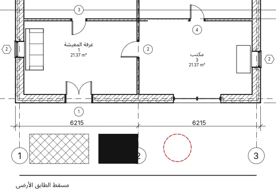
قفل التماس
حدّد خطًا (خط مخطط أو خط تفصيلي أو خط ثلاثي الأبعاد) يلتقي بآخر طرفًا لطرف بالاتجاه نفسه: يظهر قفل مفتوح بجانب نقطة الالتقاء خارج الانحناء (لا قفل بين خطين مستقيمين). عند المرور بالمؤشر يُبرز الخطان؛ والنقر يقفل التماس ونقرة أخرى تفتحه. عند القفل يبقى الخطان متماسين أثناء تعديل أيٍّ منهما: الخط الذي يدور يجعل القوس يُعاد ضبطه عبر طرفه البعيد؛ والقوس بين خطين يحافظ على نصف قطره وينزلق عليهما؛ والقطع الناقص يدور حول طرفه البعيد؛ ونقطة التحكم الثانية للمنحنى تتبع الاتجاه. التعديل الذي لا يمكنه الحفاظ عليه يسأل لم يُحافَظ على القيد: إزالة القيد يفتح القفل وينفّذ، وإلغاء يلغي. النقر بالزر الأيمن على القفل يعرض تبديل القفل وإظهار العناصر المرتبطة. في نمط BIMopen يحوي بحث الأوامر أيضًا قفل التماسات وفتح التماسات.
المكوّنات التفصيلية والتفاصيل المتكررة والعزل
- مكوّن ▸ مكوّن تفصيلي: رمز ثنائي الأبعاد (طوب أو بلوك أو خشب أو مقطع فولاذي أو لوح عزل أو خط كسر) يوضع في عرض ثنائي الأبعاد حر أو عرض تفصيلي؛ ويصطف مفتاح المسافة مع كل جدار أو خط تفاصيل قريب من المؤشر بالتتابع (وربع دورة إن لم يوجد).
- مكوّن ▸ تفصيل متكرر: انقر بداية ونهاية؛ يحدد النوع المكوّن المتكرر، والتخطيط (ملء المساحة المتاحة، أو مسافة ثابتة، أو عدد ثابت، أو أقصى تباعد)، والتباعد، وداخلي والتدوير ضمن النمط. وللنسخة الرقم حين يكون التخطيط عدداً ثابتاً.
- عزل: انقر نقطتين؛ العرض وإزاحة (يمتد العزل بهذا المقدار إلى يسار النقرات) في شريط الخيارات؛ ومع تفعيل اختيار الخطوط، تُرسم النقرة على خط تفاصيل أو جدار العزل على امتداد ذلك الخط. وعرض العزل ونسبة الانتفاخ في خصائصه. وللعزل المحدد، وللتفصيل المتكرر المحدد، مقبض عند كل طرف.
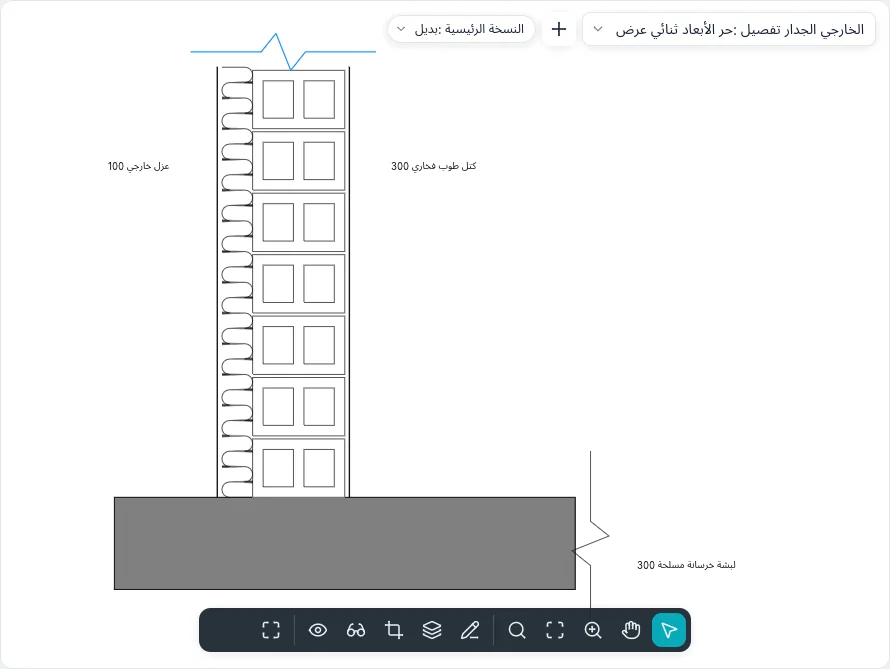
في نقوش التعبئة، يرسم سماكة الخط لنمطٍ خطوطَه بأحد سُمكات خطوط المشروع؛ وإذا تُرك على (رفيع) تبقى خطوطًا رفيعة جدًا.
ترتيب الرسم
حدّد عناصر تفصيلية فقط: يعرض ترتيب نقل إلى المقدمة ونقل للأمام ونقل للخلف ونقل إلى الخلفية. ترسم العناصر التفصيلية دائماً فوق النموذج، ويوضع الجديد منها في الأعلى. يعيد تراجع الترتيب السابق.
العروض ثنائية الأبعاد الحرة
يطلب العروض ▸ إنشاء ▸ عرض ثنائي الأبعاد حر اسماً ومقياساً (أو مقياساً مخصصاً). يُفتح العرض ويُسرد تحت العروض ثنائية الأبعاد الحرة؛ وكل ما يُرسم فيه ثنائي الأبعاد، من دون نموذج خلفه. ويمكن وضعه على لوحة واحدة. ينسخ تكرار العرض ▸ تكرار مع التفاصيل عرضاً مع عناصره التفصيلية ونصوصه وأبعاده ومكوّنات وسيلة الإيضاح.
يكتب حفظ في ملف جديد… في قائمة عرض ثنائي الأبعاد حر في الفهرس مشروعًا يضم العرض وعناصره ثنائية الأبعاد والأنواع المستخدمة. يسرد إدراج ▸ إدراج عروض من ملف… العروض ثنائية الأبعاد الحرة والجداول في الملف لتحديدها؛ وينسخ إدراج عناصر ثنائية الأبعاد من ملف… عناصر أحد عروضه إلى العرض النشط (ثنائي حر أو مسقط أو مقطع): تتبع المؤشر وتضعها نقرة، محددةً. تبقى الأنواع ذات الاسم نفسه أنواع المشروع وتُسرد.
يختار النوع في مربع الحوار وفي محدد الأنواع أحد النوعين المرفقين، التفاصيل والمخطط؛ وتُنشأ أنواع أخرى بـتكرار… في معلمات النوع، حيث تُضبط علامة المقطع وعلامة التفصيل ونص الإحالة (يُكتب بجانب رأس تفصيل يشير إلى العرض، مثل «Sim.») وقالب العروض الجديدة. النمط الرسومي إما خطوط مخفية (تحجب المناطق المنقوشة ما تحتها) أو إطار سلكي (يبقى كل شيء ظاهرًا). المستوى المرجعي المرسوم هنا يخص هذا العرض وحده وليس مستوى عمل.
في تفصيل مع مرجع إلى عرض آخر، ينشئ البند الأول <عرض ثنائي الأبعاد حر جديد> عند وضعه عرضًا ثنائي الأبعاد حرًا فارغًا بمقياس التفصيل، «تفصيل <العرض>»؛ وتُظهر العروض الموضوعة على لوحة «(التفصيل / اللوحة)» بعد اسمها.
يرسم عرض النموذج في خصائص مسقط أو مقطع أو عرض تفصيلي النموذج عادية أو نصف درجة (رمادياً تحت التفاصيل) أو لا يرسمه (عدم العرض)، مع إبقاء التفاصيل والتعليقات التوضيحية.
يرسم العروض ▸ إنشاء ▸ تفصيل مكبّر مع تفعيل مرجع إلى عرض آخر في شريط الخيارات لقطة مكبّرة تشير إلى عرض تفصيلي أو عرض ثنائي الأبعاد حر قائم بدلاً من إنشاء عرض جديد: يحمل رأسها اسم ذلك العرض ويفتحه النقر المزدوج؛ ويغيّره العرض المرجعي في خصائصها. وفي العرض ثنائي الأبعاد الحر تكون اللقطة المكبّرة دائماً من هذا النوع.
يخفي إخفاء في المقاييس الأصغر من في خصائص مقطع أو لقطة مكبّرة رمزها في العروض ذات المقياس الأكبر مقاماً، مثل تفصيل 1 : 50 المتروك خارج مسقط 1 : 100.
في سطر الأوامر
لكل أداة أمرها: dim وlineardim وangulardim وradialdim وdiamdim وarcdim وspotelevation وtext
وfindreplace وtag وroom وroomsep وareaplan وareaboundary وarea وcolorscheme
وlegend وlegendview وlegendcomponent وdetailline وregion وmask وdraworder وlock
وeq. يعرض help متبوعاً بأمر طريقة استخدامه؛ وتسرد اختصارات لوحة
المفاتيح الاختصارات المكتوبة.